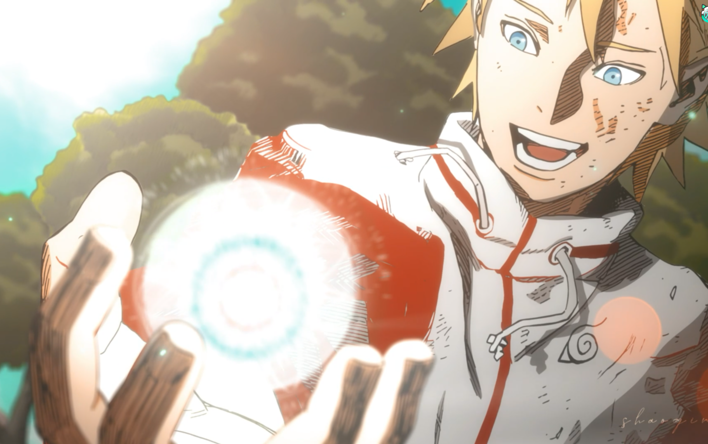
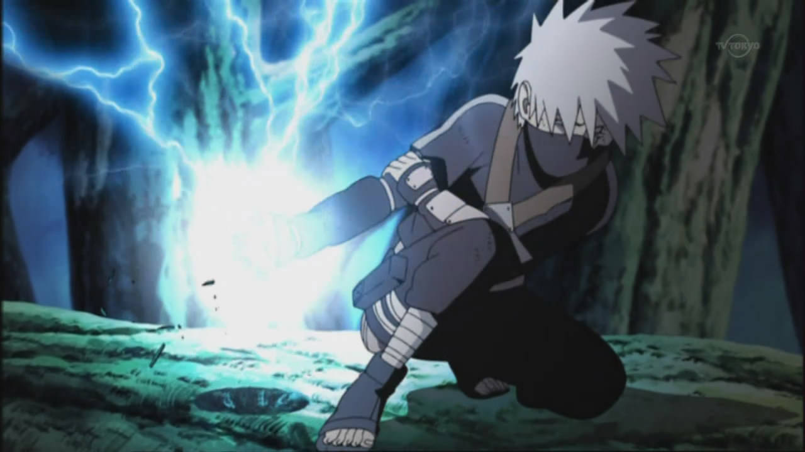
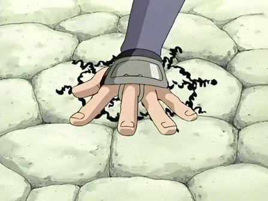
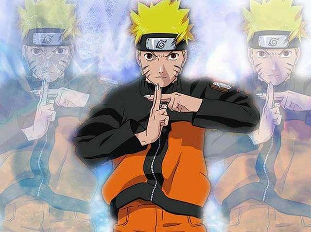
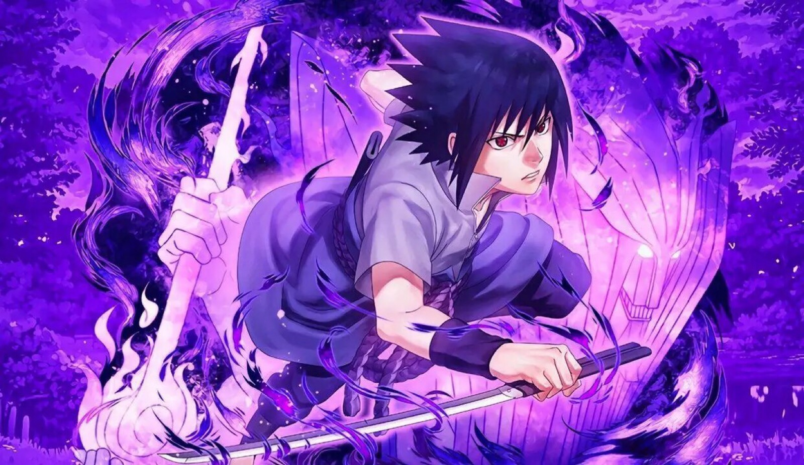
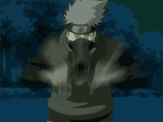

经典忍术：经典忍术：
经典忍术：经典忍术：|  | 螺旋丸（らせんがん） |
| 由水门为了让玖辛奈庞大的查克拉发挥最大的效果而开发的忍术。最初是从尾兽玉中获得灵感，与自来也一起花费三年时间所创造出来的忍术。将查克拉集中在手上，以不规则的方向不断流动，并加以压缩，形成手掌般大小的无属性查克拉球，攻击对方。 | |
| “此术名为——螺旋丸” | |
| 千鸟（ちどり） |  |
| 千鸟是少年时期旗木卡卡西开发的雷遁忍术，此术兼备查克拉性质变化和形态变化。发动时将雷遁查克拉形成的高强度电流集中在手上配合突刺的速度刺穿目标，据迈特凯所言，千鸟与雷切是同一种忍术，之所以叫雷切是因为卡卡西曾经用千鸟斩断了天上的闪电因此改名为雷切。 | |
| “千鸟！！！” | |
|  | 通灵术（口寄せの术） |
| 通灵之术是《火影忍者》漫画中，施术者与通灵兽签订血之契约关系后进行召唤的时空间忍术。使用后可以召唤出不同强度的各种通灵兽。 | |
| “通灵之术！！！” | |
| 影分身之术（かげぶんしん） |  |
| 影分身之术是《火影忍者》漫画中第二代火影·千手扉间发明的B级忍术，该术使用查克拉制造出有实体的分身，分身平均分配本体查克拉，具有独立于施术者本体的意识和一定的抗击打能力，解除后分身的记忆和经验会回到本体。 | |
| ”影分身之术！！！“ | |
|  | 须佐能乎（すさのお） |
| 须佐能乎是寄宿在万花筒写轮眼中的究极力量，将巨大的查克拉实体化后形成的魁梧的战神进行战斗，攻防一体的终极瞳术，并且会随着使用者的瞳力加强而让须佐能乎分阶段成长（共四个阶段）。 | |
| ”须佐能乎！！！“ | |
| 其它各种忍术： |  |
| ”忍术合集！！！“ | |